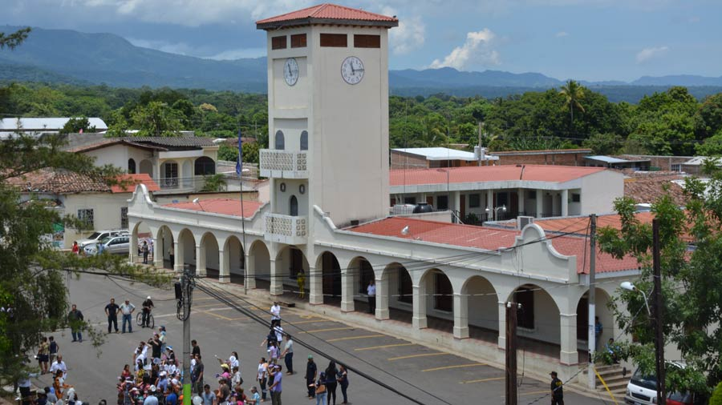

ATIQUIZAYA
conocida popularmente como "Ciudad de manantiales" (más adelante veremos el por que) es un municipio que se sitúa en el departamento de Ahuachapán al occidente del país. Cuenta con una extensión territorial de 66,64 km² y una población de 33,587 habitantes, lo que le da el puesto número 43 en cantidad poblacional en El Salvador.
Está situado a 599 msnm y a 87 km de la ciudad de San Salvador. Limita al norte con Chalchuapa y San Lorenzo; al este con Chalchuapa y El Refugio; al oeste con Ahuachapan, Turín y San Lorenzo; al sur limita con Juayua; Atiquizaya cuenta con ríos importantes como: Río río Zunca, río San Antonio y Agua Tibia.
|  |
Esta antigua población fue fundada desde hace mucho tiempo por indios pokomanes del grupo maya-quiché. Cuando fueron conquistados por guerreros pipiles hacia fines del siglo XV su nombre original fue cambiado y le colocaron el nombre náhuatl que aún se conserva. En idioma náhuatl Atiquizaya está formado por las raíces at: agua; y quizaya: quizayan; lo que significa: “origen”, “lugar de donde sale alguna cosa”.El segundo vocablo tiene su composición iquizaya o iquizayan, que se traduce por “su origen, o su comienzo”. |
Esta última forma con la voz “at” en forma de prefijo, el toponímico Atiquizayan o Atiquizaya , que tiene como significado “hilos o filetes de agua, riachuelos, arroyos”. Atiquizaya puede traducirse como “lugar de manantiales” o “lugar abundante en aguas”. En el territorio del municipio de Atiquizaya abundan los manantiales y las fuentes; de allí su nombre. Posee veintisiete fuentes de agua templada en sus cercanías, de calidad potable; entre estas se encuentra una llamada de Las Minas, que es de carácter termal y considerado saludable para toda tipo de enfermedades cutáneas y males venéreos.
Turismo
Además de dichas fuentes naturales de agua o nacimientos, el municipio es parte de la Ruta de Las Flores y entre sus atractivos podemos encontrar el Mirador de Atiquizaya en Joya del Zapote y desde donde se puede observar gran parte del municipio. En la zona de El Mirador, se puede practicar deportes como el ciclismo de montaña y algunas personas también han practicado motocross; especialmente se puede acceder desde aquí a dos lagunas. Una de ellas es la Laguna de Las Ranas y la otra es Laguna Verde; aunque estas ya se encuentran en otros municipios que son: Juayúa y Apaneca, respectivamente.
Si se interesa por las artesanías, en Cantón San Juan El Espino se encuentran variedad de artesanías elaboradas por ahuachapanecos y ahuachapanecas de la zona. Y si desea bañarse, puede visitar el Turicentro Cooperativa El Jícaro llamado también "Centro Ecoturístico El Jícaro"; aquí podrá disfrutar de restaurante, piscina, posibilidad de campar, servicio de restaurante, comprar pescados, cancha y mini zoológico.
También existe la opción de visitar la cascada de Malacatiupán; los lugareños suelen llamarle "El Salto" y está distanciado de la ciudad por unos cinco kilómetros, justamente en el camino de la antigua Calle Real que en tiempos antiguos conducía a Guatemala.
Es de destacar que en Malacatiupán hay aguas termales, y con una temperatura de aproximadamente 40 grados centígrados, el turista puede disfrutar y relajarse rodeado de la naturaleza. Para ir al lugar le recomendamos pedir la opinión de los lugareños ya que ellos conocen muy bien la situación y si es posible o recomendable visitar el lugar.